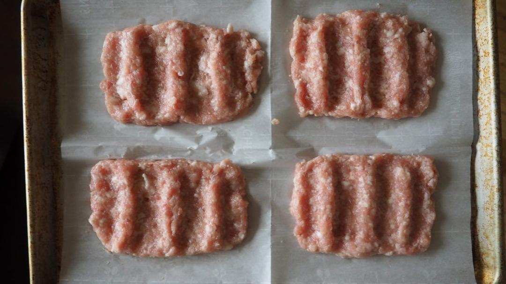

McRib patties

Ingredients
- 1 lb cold ground pork (80/20 ideal)
- Dry seasonings of choice
- 1¾ tsp kosher salt (if seasoning already contains salt adjust accordingly)
- 1 tbsp potato starch OR cornstarch (optional)
- 1–2 tbsp ice-cold water
Directions
- 1 1 Spread ground pork on a plate and freeze 20–30 minutes until very cold but pliable. 2 2 Place the cold ground pork into the stand mixer bowl. 3 3 Sprinkle salt, dry seasonings, and starch evenly over the pork. 4 4 Mix on LOW speed for 30 seconds, just until evenly combined. 5 5 Increase to MEDIUM speed and mix 2–3 minutes until meat is sticky and slightly glossy. 6 6 If meat feels warm, stop and refrigerate 10 minutes before continuing. 7 7 Reduce to LOW speed and slowly drizzle in ice-cold water. 8 8 Mix 30–45 seconds, just until water is absorbed. 9 9 Remove meat and press firmly into rib-shaped patties. 10 10 Refrigerate patties 10–15 minutes before cooking.